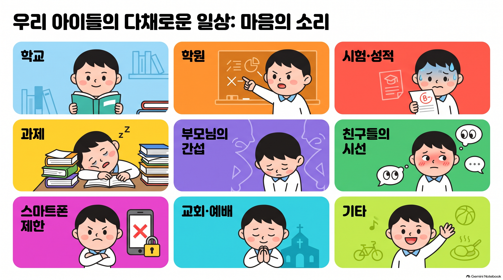

01
한 가지에서 자유로워진다면
‘내가 원하는 자유’를 발견하고 질문을 남기는 7분

-
활동 질문
- 완전히 자유로워지고 싶은 것을 딱 하나만 고른다면?
- 왜 이것에서 자유롭고 싶나요?
- 정말 자유로워진다면 가장 먼저 무엇을 하고 싶나요?
7분 진행표
1분 설명과 카드 선택 → 5분 한 명씩 선택 이유와 자유로워진 뒤 하고 싶은 것 → 1분 설교 복귀 준비
지금부터 여러분이 딱 한 가지에서 완전히 자유로워질 수 있다고 상상해 봅시다. 카드 중 하나를 고르세요. 왜 그 카드를 골랐는지, 그것에서 자유로워지면 무엇을 하고 싶은지 한 사람씩 짧게 이야기해 봅시다. 신앙적으로 멋진 답을 할 필요는 없습니다.
“저는 학원 카드를 골랐어요. 학교가 끝나도 계속 공부해야 해서 제 시간이 없는 것 같아요. 학원에서 자유로워지면 친구들과 아무 걱정 없이 놀고 싶어요.”
학생의 선택을 평가하지 마세요. 특히 ‘교회·예배’를 고른 학생에게 “그러면 안 되지”라고 반응하지 않습니다. 먼저 답답함의 이유를 듣는 것이 설교가 들어갈 자리를 만듭니다.
우리가 무엇에서 자유롭고 싶은지 솔직하게 나눴습니다. 그런데 마지막으로 한 가지만 생각해 봅시다. 우리가 고른 그것이 완전히 사라지면, 우리는 정말 자유로워질까요? 지금은 답하지 않아도 됩니다. 이 질문을 가지고 이어서 바울의 이야기를 들어봅시다.